In de media
Media
Artikelen, podcasts, talkshows en lezingen.
Video
Mireille op het podium
Fragment uit de lezing over verslaving.
Artikelen en video’s
Mireille in de media
 Video
VideoTalkshow HvA – Polarisatie
- Artikel
Artikel Trouw – Racisme
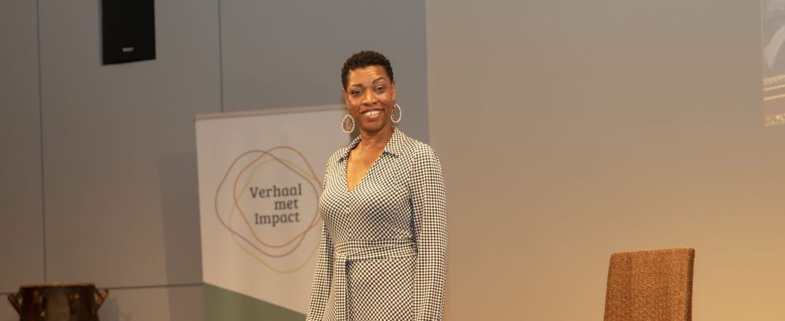
PortretPortret Sterke Meisjes
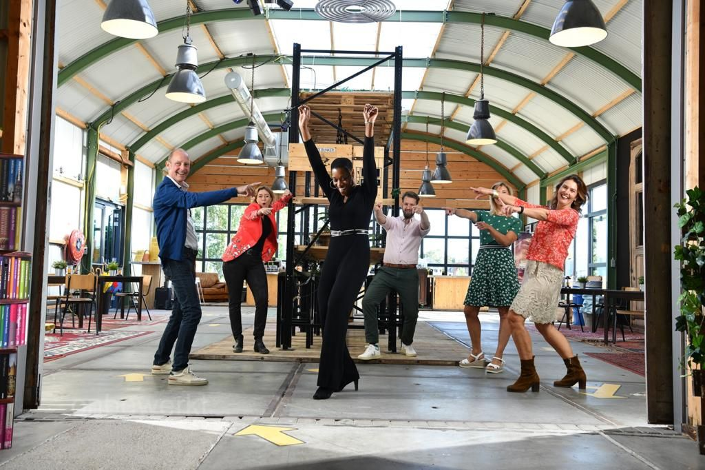
ArtikelHealth Professional of the Month
 Artikel
ArtikelTerugblik artikel SER
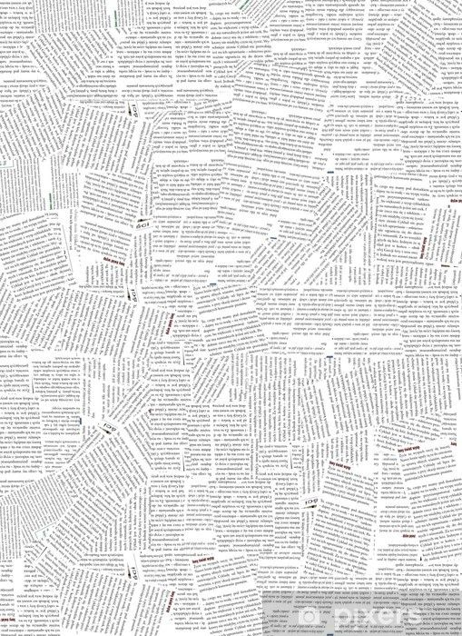
ArtikelArtikel Adformatie – BLM & Corona
 Video
VideoLezing – Verslavingen
 Video
VideoMireille traint Typhoon
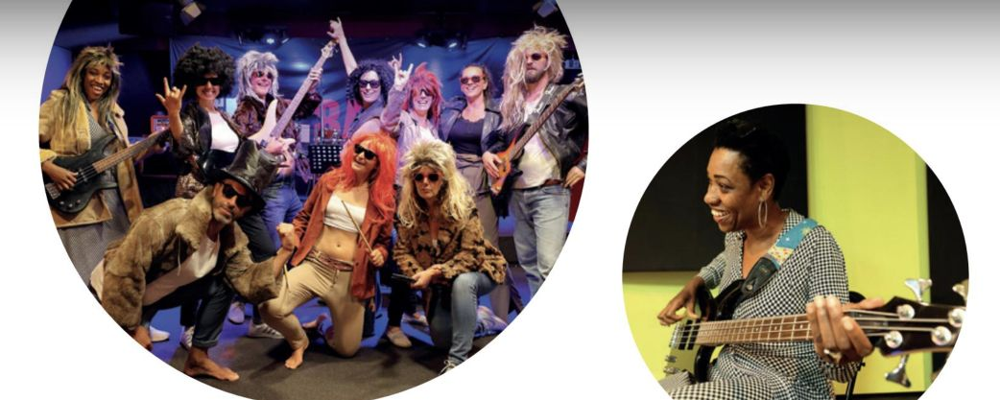
ArtikelArtikel Issuu – Teambanding
 Blog
BlogBlog – Jij maakt het verschil
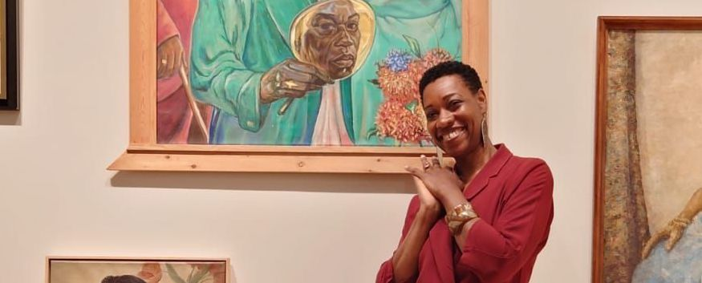
ProfielMireille op LinkedIn

Luister
Podcasts
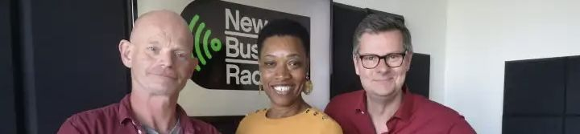
People Power RadioMireille & Anton van der Schot over de baas spelen of zijn
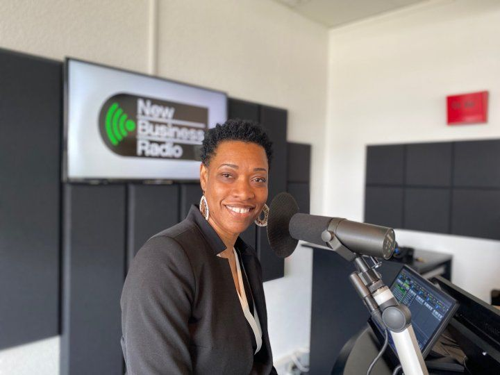
People Power RadioMireille & Glenn van der Burg over leiden
- People Power Radio
Mireille & Rachida El Moussaoui over leiden
- People Power Radio
Mireille & Anita Abaisa over VR voor D&I
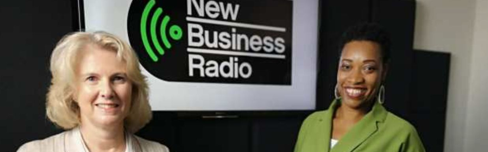
People Power RadioMireille & Karima Matser over leiden
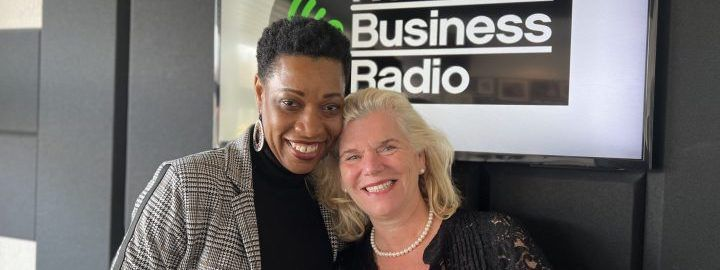
People Power RadioMireille & Ria van Dinteren over psychologische veiligheid
- Spotify
Mireille & VO-raad over D&I
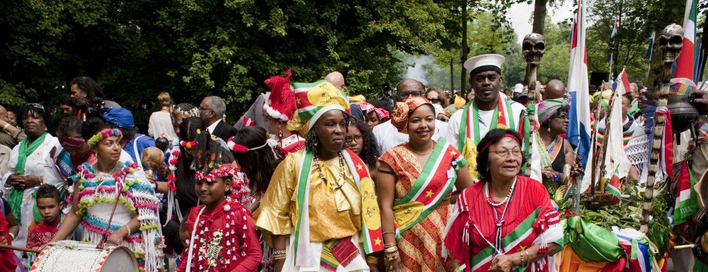
YouTubeMireille en Jitske over Keti Koti
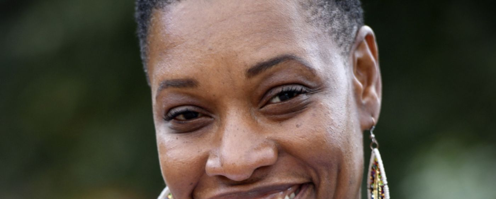
SpotifyMireille & Glenn van der Burg over ontwikkeling
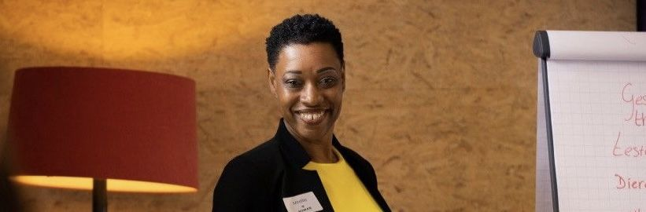
SpotifyMireille als NOBTRA trainer van het jaar
Een lezing, training of facilitatie boeken?
Vertel wat er speelt in jouw team of organisatie. We denken graag mee over de vorm die past.